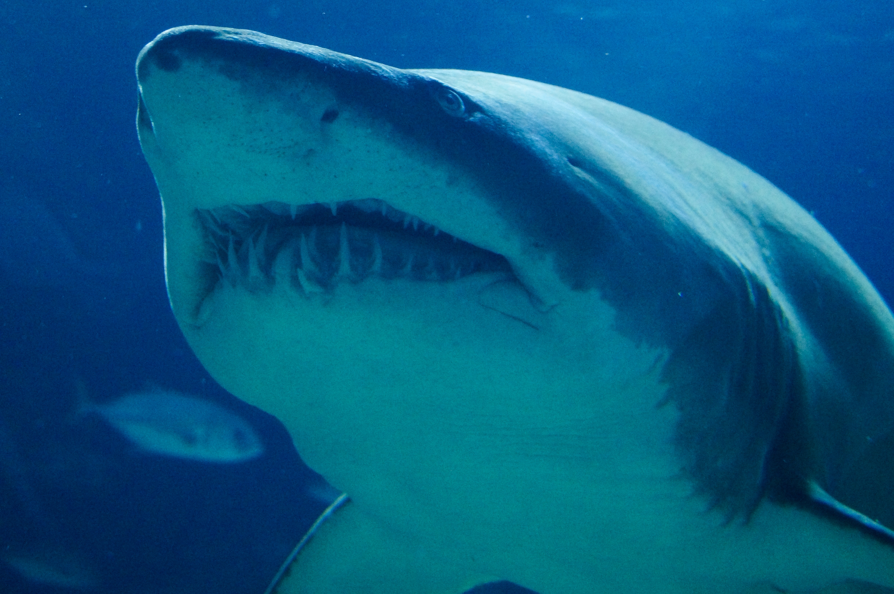

This section is where I will talk about different adaptations that are caused by the different shapes and sizes of sharks. Including the hammerhead sharks shown above and the cookie cutter shark. One of the smallest sharks.

This section is where I will talk about adaptations such as the ampullae of Lorenzini and the lateral line along with the replenishing teeth.
This section will hold information about why we need to protect sharks and how to do that.